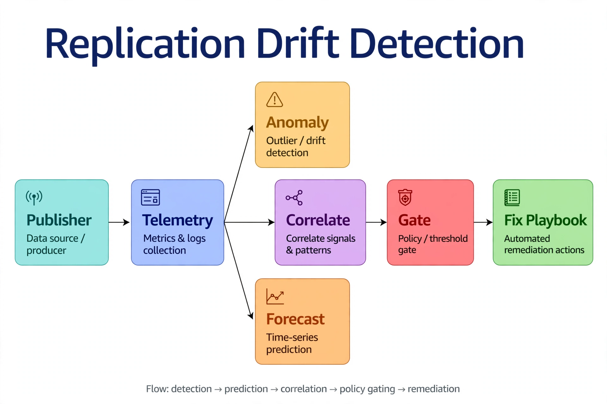

Chapter 37: AI for Replication and CDC Monitoring
Replication and Change Data Capture are the circulatory systems of the modern SQL Server estate. Transactional replication feeds reporting servers and downstream applications. Change Data Capture powers ETL pipelines, audit trails, and event-driven architectures. Always On availability groups carry the disaster recovery promise. And every one of these systems fails in the same frustrating way: silently at first, then catastrophically. A log reader agent falls behind by minutes, then hours. A CDC capture job stalls on a long-running transaction and the transaction log starts growing. A secondary replica drifts out of sync and nobody notices until failover testing day.
Traditional monitoring catches these problems with thresholds — alert when latency exceeds ten minutes, when undistributed commands exceed a million. Thresholds are better than nothing, but they miss the failure modes that matter: the latency that is normal at 2 PM but pathological at 2 AM, the gradual degradation that stays under the threshold for weeks while the backlog compounds, the correlated slowdown across three subscribers that points to a publisher-side problem. This chapter shows how to layer ML on top of SQL Server's replication and CDC telemetry so you detect the problems thresholds miss, predict the ones coming next, and remediate the routine ones automatically.
---
The Telemetry Contract Your AI Layer Needs
The AI in this chapter does not replace replication monitoring — it reasons over it. That means the first deliverable is not a model but a telemetry contract: a scheduled collection job, every five minutes, snapshotting the latency, backlog, and agent-state signals that the anomaly models will learn from. ML models are only as good as their training data, and a year of five-minute replication latency samples is worth more than any clever algorithm. This section defines the minimum signal set; everything after it is what AI does with those signals.
-- Replication agent signal snapshot: every 5 min into dbo.repl_latency_history
-- Execute in the distribution database
SELECT
GETUTCDATE() AS snapshot_time,
a.name AS agent_name,
a.subscriber_db,
p.publication AS publication_name,
h.runstatus, -- 1=start 2=succeed 3=in progress 4=idle 5=retry 6=fail
h.time AS last_run_time,
h.duration AS last_duration_sec,
h.delivery_rate AS commands_per_sec,
h.deliver_latency AS deliver_latency_ms,
LEFT(h.comments, 200) AS last_message
FROM distribution.dbo.MSdistribution_agents a
JOIN distribution.dbo.MSpublications p
ON p.publication_id = a.publication_id
OUTER APPLY (
SELECT TOP 1 *
FROM distribution.dbo.MSdistribution_history hh
WHERE hh.agent_id = a.id
ORDER BY hh.time DESC
) h;-- CDC capture signal snapshot: how far behind is the capture job?
-- Execute in each CDC-enabled database
SELECT
DB_NAME() AS database_name,
DATEDIFF(SECOND, MAX(tm.tran_end_time), GETUTCDATE()) AS capture_latency_seconds,
MAX(tm.tran_end_time) AS last_captured_tran_time,
d.log_reuse_wait_desc
FROM cdc.lsn_time_mapping tm
CROSS JOIN sys.databases d
WHERE d.name = DB_NAME()
GROUP BY d.log_reuse_wait_desc;
-- CDC job state: is the capture job actually running?
SELECT
j.name AS job_name,
CASE WHEN ja.job_id IS NOT NULL THEN 'Running' ELSE 'Not running' END AS job_state
FROM msdb.dbo.sysjobs j
LEFT JOIN msdb.dbo.sysjobactivity ja
ON ja.job_id = j.job_id AND ja.stop_execution_date IS NULL
WHERE j.name LIKE 'cdc.%capture';Store both result sets in history tables with a clustered index on snapshot_time, and add Always On replica lag from sys.dm_hadr_database_replica_states (log_send_queue_size, redo_queue_size) to the same pipeline. That is the entire input contract. The rest of this chapter is the AI reasoning layer that turns these signals into detection, prediction, localization, and action.
---
Detecting Latency Anomalies the Thresholds Miss
Replication latency has strong seasonality: batch loads at night, reporting bursts at 8 AM, quiet weekends. A static ten-minute threshold either pages you during every nightly batch or stays silent while a subscriber drifts forty minutes behind on a Sunday afternoon. The fix is a seasonal anomaly model — Prophet or a simple seasonal decomposition — trained per publication-subscriber pair on your latency history.
import pandas as pd
import pyodbc
from sklearn.ensemble import IsolationForest
from sklearn.preprocessing import RobustScaler
import numpy as np
def train_latency_model(conn_str: str, publication: str, subscriber_db: str,
lookback_days: int = 90):
"""
Train a seasonal anomaly detector for one replication stream.
Features encode time-of-day and day-of-week so the model learns
what 'normal' latency looks like at 2 AM vs 2 PM.
"""
conn = pyodbc.connect(conn_str)
df = pd.read_sql("""
SELECT snapshot_time, deliver_latency_ms, commands_per_sec,
last_duration_sec
FROM dbo.repl_latency_history
WHERE agent_name = ?
AND snapshot_time > DATEADD(DAY, -?, GETUTCDATE())
ORDER BY snapshot_time
""", conn, params=(agent_name, lookback_days))
conn.close()
df['snapshot_time'] = pd.to_datetime(df['snapshot_time'])
df['hour'] = df['snapshot_time'].dt.hour
df['dow'] = df['snapshot_time'].dt.dayofweek
# Cyclical encoding: hour 23 is close to hour 0
df['hour_sin'] = np.sin(2 * np.pi * df['hour'] / 24)
df['hour_cos'] = np.cos(2 * np.pi * df['hour'] / 24)
df['dow_sin'] = np.sin(2 * np.pi * df['dow'] / 7)
df['dow_cos'] = np.cos(2 * np.pi * df['dow'] / 7)
# Trend features: is latency climbing and throughput falling vs recent baseline?
df['latency_1h_mean'] = df['deliver_latency_ms'].rolling(12, min_periods=1).mean()
df['latency_1h_max'] = df['deliver_latency_ms'].rolling(12, min_periods=1).max()
df['throughput_ratio'] = (df['commands_per_sec'] /
df['commands_per_sec'].rolling(12, min_periods=1).mean()
).fillna(1.0)
features = ['hour_sin', 'hour_cos', 'dow_sin', 'dow_cos',
'deliver_latency_ms', 'latency_1h_mean', 'latency_1h_max',
'commands_per_sec', 'throughput_ratio', 'last_duration_sec']
X = df[features].fillna(0)
scaler = RobustScaler()
model = IsolationForest(n_estimators=200, contamination=0.02,
random_state=42, n_jobs=-1)
model.fit(scaler.fit_transform(X))
return model, scaler, featuresThe features that matter most are the trend features: latency_1h_mean and throughput_ratio. A latency spike during the nightly batch is seasonal and the model learns to ignore it; latency climbing across three consecutive five-minute windows while delivery throughput collapses relative to its recent baseline is the signature of a genuinely stuck distribution agent — and the model flags it hours before a static threshold would fire. Score each agent every five minutes, and route anomalies to your incident pipeline with the contributing features attached so the on-call engineer sees why it fired: "deliver latency 3.2x the seasonal baseline for this hour, throughput at 18% of the trailing mean."
---
Predicting CDC Capture Lag Before the Log Fills
CDC's most dangerous failure mode is not slow delivery — it is a stalled capture job holding the transaction log hostage. The capture job reads from the log; if it stops advancing (blocked by a long-running transaction, a full tempdb, an agent crash), log truncation stalls and the log grows until the disk fills. By the time anyone notices, you are in a severity-1 incident.
The leading indicator is the capture latency trend combined with log reuse wait state. Train a regression model on your CDC history to predict capture latency thirty minutes ahead, and pair the prediction with a log-space check:
-- Early warning: CDC capture lag vs. log truncation pressure
DECLARE @latency_sec INT = (
SELECT DATEDIFF(SECOND, MAX(tran_end_time), GETUTCDATE())
FROM cdc.lsn_time_mapping
);
DECLARE @reuse_wait NVARCHAR(60) = (
SELECT log_reuse_wait_desc FROM sys.databases WHERE name = DB_NAME()
);
SELECT
@latency_sec AS capture_latency_seconds,
@reuse_wait AS log_reuse_wait_desc,
CASE
WHEN @reuse_wait = 'REPLICATION' AND @latency_sec > 600
THEN 'CRITICAL: capture stalled, log cannot truncate'
WHEN @latency_sec > 300
THEN 'WARNING: capture lag growing'
ELSE 'OK'
END AS cdc_health;Feed the latency series into a gradient boosting regressor that predicts the thirty-minute-ahead value from recent lags, time-of-day features, and the current log_reuse_wait_desc. When the predicted latency crosses your warning threshold, trigger the remediation playbook before the log fills: check for blocking on the capture job's session via sys.dm_exec_requests, restart the CDC capture job if it is hung, and page if log_reuse_wait_desc shows REPLICATION with latency still climbing after the restart. The prediction buys you the thirty minutes that separate a routine job restart from a 3 AM disk-full page.
---
Correlating Failures Across the Topology
The hardest replication incidents are the ones where every individual stream looks borderline but the pattern across streams tells the real story. Three subscribers all degrading simultaneously is not three subscriber problems — it is one publisher or distributor problem. Five CDC-enabled databases stalling at once is not five CDC problems — it is a storage or log throughput problem.
Build a correlation layer on top of your per-stream anomaly scores. Every five minutes, collect the anomaly score for every stream in the topology and compute the pairwise correlation of recent score series. When the mean pairwise correlation across streams sharing a publisher spikes, the diagnosis writes itself: the fault is upstream. This turns a flood of individual alerts into a single incident with a located cause — "distribution latency anomalous on 4 of 5 subscribers of publication Orders; publisher-side investigation indicated" — instead of four separate pages that each get acknowledged and ignored.
def correlate_topology_anomalies(score_frame: pd.DataFrame,
topology: dict) -> list[dict]:
"""
score_frame: rows = 5-min buckets (last 2h), columns = stream names,
values = anomaly scores (negative = more anomalous).
topology: stream_name -> {'publisher': ..., 'distributor': ...}
Returns candidate root-cause localizations.
"""
findings = []
# Group streams by shared upstream component
by_publisher = {}
for stream, meta in topology.items():
by_publisher.setdefault(meta['publisher'], []).append(stream)
for publisher, streams in by_publisher.items():
if len(streams) < 2:
continue
sub = score_frame[streams].dropna()
if sub.empty:
continue
# Mean pairwise correlation of anomaly scores
corr = sub.corr().values
n = len(streams)
mean_corr = (corr.sum() - n) / (n * (n - 1)) # exclude diagonal
anomalous_now = (sub.iloc[-1] < -0.15).sum()
if mean_corr > 0.6 and anomalous_now >= 2:
findings.append({
'scope': 'publisher',
'component': publisher,
'affected_streams': streams,
'mean_correlation': round(float(mean_corr), 2),
'recommendation': (
f"Investigate publisher '{publisher}' first: "
f"{anomalous_now} streams anomalous with correlated "
f"degradation (r={mean_corr:.2f}). Check log reader agent "
f"throughput and publisher transaction log growth."
)
})
return findingsThe same correlation logic applies to Always On availability groups: when redo queue growth correlates across multiple secondaries, look at the primary's log send throughput and network path, not at the individual replicas. Topology-aware correlation is what separates an AI monitoring layer from a pile of independent threshold alerts.
---
Automated Remediation Playbooks
Detection without action is just expensive logging. The AI layer earns its keep when model outputs map to bounded remediation playbooks — and for replication and CDC, a small set of low-risk, reversible actions covers the majority of incidents. The intelligence is not in the restart command; it is in the decision logic that selects the playbook from the anomaly signature, checks the preconditions, and decides whether the action is safe to run autonomously or needs a human.
Playbook 1 — Restart a stuck distribution agent. Trigger: the seasonal model flags one agent with climbing deliver latency and collapsing throughput ratio while runstatus shows retry or fail. The topology correlator must confirm the fault is not upstream (single-stream scope) before this playbook is eligible — restarting an agent when the publisher is the real problem just adds churn.
Playbook 2 — Restart a stalled CDC capture job. Trigger: the thirty-minute lag forecast crosses the warning threshold. Precondition check: identify the capture session's blocker from sys.dm_exec_requests. If the blocker is a runaway ad-hoc query the classifier marks non-critical, kill it; if it is a business batch window, restart only the capture job and escalate. The model output selects the branch — the playbook never kills blindly.
Playbook 3 — Throttle the distributor during subscriber catch-up. Trigger: one subscriber far behind during a bulk load while siblings are healthy. This playbook is approval-gated, not autonomous: it changes production throughput characteristics. The AI contribution is the recommendation package — predicted catch-up time with and without throttling — so the approver decides on evidence, not gut feel.
import pyodbc
def remediate_stuck_distribution_agent(conn_str: str, agent_job_name: str,
dry_run: bool = True) -> dict:
"""
Bounded remediation: restart a stuck distribution agent.
dry_run=True logs the intended action without executing (shadow mode).
"""
result = {'agent': agent_job_name, 'dry_run': dry_run, 'steps': []}
conn = pyodbc.connect(conn_str, autocommit=True)
cur = conn.cursor()
# 1. Confirm the agent is actually stuck (not mid-retry of a transient error)
cur.execute("""
SELECT TOP 1 run_status, run_duration, message
FROM distribution.dbo.MSdistribution_history h
JOIN distribution.dbo.MSdistribution_agents a ON a.id = h.agent_id
WHERE a.name = ?
ORDER BY h.time DESC
""", (agent_job_name,))
row = cur.fetchone()
if row and row.run_status == 1: # 1 = Start (in progress); give it time
result['steps'].append('agent shows active run; no action taken')
return result
# 2. Stop then start the agent job (idempotent restart)
steps = [
("EXEC msdb.dbo.sp_stop_job @job_name = ?", (agent_job_name,)),
("WAITFOR DELAY '00:00:30'", ()),
("EXEC msdb.dbo.sp_start_job @job_name = ?", (agent_job_name,)),
]
for sql, params in steps:
result['steps'].append(sql if dry_run else f"EXECUTED: {sql}")
if not dry_run:
cur.execute(sql, params) if params else cur.execute(sql)
# 3. Audit the remediation with context
cur.execute("""
INSERT INTO dbo.repl_remediation_log
(remediation_time, agent_name, action, dry_run)
VALUES (GETUTCDATE(), ?, 'restart_distribution_agent', ?)
""", (agent_job_name, 1 if dry_run else 0))
conn.close()
return resultRun every playbook in shadow mode for the first month — log what would have been done and compare against what the on-call engineer actually did. Promote to autonomous execution only for playbooks where the shadow log shows the automation's decision matched the human's decision at least 90% of the time. The audit table dbo.repl_remediation_log is your evidence trail for that promotion decision.
---
Detecting Data Drift in Downstream Consumers
Replication monitoring usually stops at "did the rows arrive." AI-assisted monitoring goes one level deeper: "do the rows still look like they used to?" Schema changes, application deployments, and upstream data quality regressions change the statistical shape of replicated data — a column that was 99% non-null drops to 60%, a status code distribution shifts overnight. Downstream ML models trained on the old distribution silently degrade.
Build a drift monitor on your key replicated tables: daily, compute a profile (null rates, distinct counts, distribution histograms for numeric columns) on both the publisher and the subscriber, and compare. Divergence between publisher and subscriber profiles indicates replication data corruption or transformation bugs; divergence of the publisher profile from its own history indicates an upstream change worth investigating. A simple population stability index (PSI) per column, computed in T-SQL or Python, catches both. Alert when PSI exceeds 0.25 on any monitored column — the standard threshold for a significant distribution shift — and attach the before/after histograms to the alert so the data engineering team can see exactly what changed.

The teal Publisher streams metrics and logs into the blue Telemetry collector, which fans out three ways: amber Anomaly detection finds outlier drift, orange Forecast predicts time-series behavior like CDC lag, and the middle arrow feeds both into the purple Correlate stage — which determines whether the problem is localized to one stream or spans the publisher-subscriber topology. The red Gate enforces policy and thresholds, and the green Fix Playbook executes the automated remediation (agent restarts, job restarts, throttle adjustments). The flow's footer names the pattern: detection to prediction to correlation to gating to remediation — each stage narrowing what the next one must decide.
*The AI-assisted replication monitoring stack: per-stream anomaly detection and CDC forecasting feed a topology correlator that localizes the fault, and bounded playbooks remediate — every step audited.*
---
Key Takeaways
QueryOptimizer — Self-Hosted SQL Performance Workbench
EXPLAIN visualizer · Index advisor · Slow query dashboard · SQL Server
Test yourself on this chapter
5 questions · instant scoring · explanations included